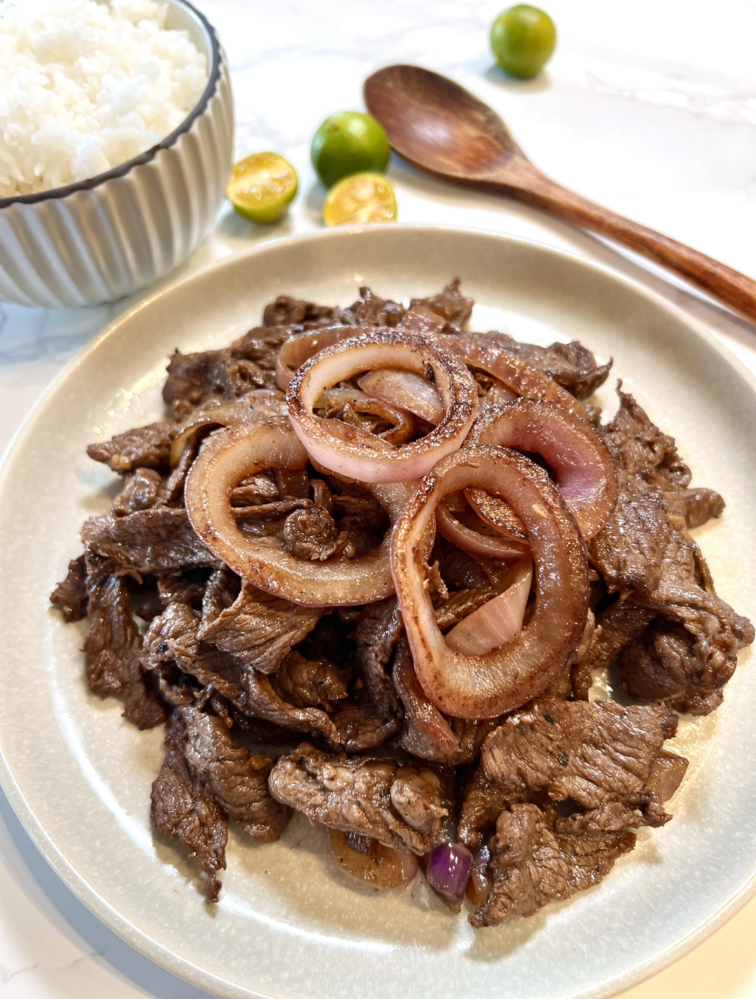

Bistek Tagalog

Description
Bistek Tagalog is a Filipino beefsteak dish that consists of thinly sliced meat braised in a robust, peppery sauce with hints of citrus.
Ingredients
- 500 g beef sirloin slices, ¼” thick, pounded
- 1 pc Knorr beef cube
- 3 tbsps olive oil
- fine breadcrumbs
- cooking oil for frying
For the sauce
- ¾ cup Knorr Liquid Seasoning
- ¼ cup calamansi juice
- ¼ cup water
- ¼ cup water
- 1 tbsp cornstarch diluted in 3 tbsp water
- 150 g onion rings, fried in oil
- 1 pinch crushed black pepper
Steps
-
Begin by mashing the Knorr Beef Cube with a mortar and pestle.
Pound it well and then slowly drizzle 3 tbsp of olive oil. Mix this well.
Massage this mixture onto the beef slices.
-
Cover the beef in breadcrumbs.
-
Get your pan nice and hot over medium high heat.
Pour some oil and pan-fry the beef slices. Set this aside.
-
Remove the excess oil from the pan.
-
To make the sauce:
Add the Knorr Liquid Seasoning, calamansi juice, water and sugar in a bowl.
Season this with black pepper and adjust the seasoning of sauce as desired.
Thicken the sauce with diluted cornstarch and drizzle the sauce on top of the fried beef and top with glazed onion rings.